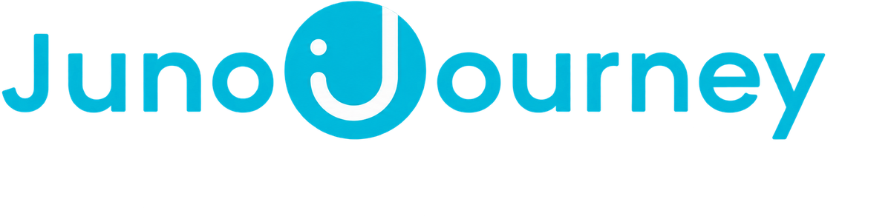

Development plans
Get guidance on defining practical next steps for growth.
People Success
A practical guide to where team members can get support, build skills, and prepare for what comes next.
Need support now? Start with Office Hours. Ready to grow? Choose the right learning path.
Start here
A 30-minute open support call for team members looking for guidance on learning, growth, tools, and career direction.
Get guidance on defining practical next steps for growth.
Explore readiness, leadership learning, and programs.
Navigate Juno, DataCamp, Infosys, InfoSpring, and other tools.
Find courses or resources that fit your goals.
Talk through growth options and development direction.
From the start
These resources help team members orient quickly, understand Boldr basics, and find reliable internal support.
Primary foundation for onboarding, internal ways of working, policies, role readiness, and core internal skills. An early reference point for internal information, answers, and support available immediately at the start of the journey.
Learning Hub through IBPAP, a broad learning benefit that extends development beyond internal foundations into AI, technology, professional skills, and soft skills.
At a glance
A learning benefit designed to support continuous growth across role, technical, and professional capability areas.
Build awareness and practical skills in emerging and technical topics.
Strengthen communication, productivity, ownership, and workplace habits.
Develop collaboration, problem solving, feedback, and resilience skills.
Use learning paths to keep development focused and easier to sustain.
Choose development areas that fit your role, goals, and schedule.
 Fastest way to open the registration page
Fastest way to open the registration page
Get started
Scan the QR code or open the registration page to start exploring the Learning Hub.
How to get started
Use the QR code or official link.
Tag Beneficiary / Partner School as IBPAP and Community Sector as Boldr.
Browse the course library and choose your first AI course. Learn on your own schedule with self-paced resources and structured learning paths.
Register on the Infosys Springboard App and take your first step toward learning AI and more.
Regular team members
Once team members are regular, DataCamp and Juno become the next layer for skill building and structured development.
Build technical depth through analytics, data fluency, AI skills, and other technical capability paths.
Open DataCamp ↗
Guide growth journeys with role-based learning, development pathways, and ongoing enablement.
Open Juno ↗Use Office Hours if you are unsure which platform best matches your current development goal.
Juno Career Growth
A learner-facing overview of the Career Growth experience inside Juno. This keeps the focus on what team members can explore and excludes screenshots, employee counts, and internal staffing details.
Career Growth helps team members understand how roles are organized in Juno, explore potential next directions, and connect growth goals to the skills and competencies they may need to build.

See what is possible beyond your current role.
Understand the capabilities that can guide your development.
Connect learning choices to future goals.
Bring clearer context into development conversations.
Juno Journey reminder
Paid courses are available through the Juno Journey process, with team review to keep requests aligned to budget and growth priorities.
Budget is intended for paid courses. Requests are reviewed to align learning with development needs, available budget, and the right timing.
Practice reminder. As practice, the team assigns one paid course at a time.
Mentorship
Your go-to platform to actively engage in the mentorship program. Everything you need to connect, learn, and grow is already live, start making the most of it today.
Mentorship made easy to access. Use Mently to find the right mentor, book time without the back and forth, and discover expertise that supports your development goals.
Open Mently ↗Find mentors aligned with your goals and interests.
Secure time with mentors, no back and forth needed.
Browse skills and focus areas to guide your growth journey.

Start connecting through mentorship. Explore Mently and begin connecting with mentors who can support your goals, interests, and growth journey.
Leadership development
People Success supports leadership growth through programs, coaching, certification, and strengths-based development.
Develop high-potential team members into leadership-ready talent faster than traditional paths allow.
Explore program ↓ 02 LEAD WITH STRENGTHSUse strengths assessments, coaching, and learning experiences to support individual contributors and leaders.
Explore program ↓ 03 LEAD WITH IMPACTCertification training that provides conscious leadership training and practical strategies to help leaders lead more effectively.
Explore program ↓ 04 L.E.A.D. COACHINGForums focused on practical leadership tools, decision-making, and maximizing each leader’s zone of genius.
Explore program ↓A strong internal bench helps Boldr scale operations and sustain performance through organizational growth. Promoting from within can reduce ramp time, lower hiring costs, and support retention by giving team members visible growth pathways.
Aspiring Leaders Program
A leadership development pathway designed to transform high-potential team members into promotion-ready talent.
Build a stronger internal bench to support scaling operations and sustaining performance through growth.
Prepare team members for leadership opportunities while reducing ramp time and supporting retention.
Develop high-potential Team Members into leadership-ready talent faster than traditional paths allow.
Team members who consistently demonstrate leadership potential, ownership, coachability, and readiness for structured growth.
Ready to explore?
Discover the program focus, readiness criteria, and how People Success can help you take the next step.
Lead with Strengths
A longer-term development plan that combines assessments, coaching, certification, and learning experiences.
Understand how you work best and how to lead, collaborate, and grow through strengths.
Senior leadership
Advanced strengths work designed to deepen leadership insight and team effectiveness.
Team leadership
Practical strengths development for coaching, collaboration, and day-to-day leadership.
Individual growth
Foundational strengths learning that helps team members understand how they work best.
The goal is to help team members understand how they work best and how to lead, collaborate, and grow through strengths.
Lead with Impact
Certification training that provides conscious leadership training and practical strategies to help leaders lead more effectively.
Program snapshot
A certification pathway that helps leaders build conscious leadership habits, strengthen clarity, and apply more effective strategies in day-to-day leadership.
Audience
This program is positioned as a structured leadership path for TCs, with a certificate at the end and a clearer career track beyond it.
Program signal
The standard has been clarified and raised. The message is not performance correction, but Boldr’s investment in growth, alignment, and readiness.
Participant outcomes
Conscious leadership foundations and stronger leadership self-awareness.
Strategies to lead with clarity, presence, and accountability.
A formal certificate and clearer development path toward Senior TC and CX Manager.
Lead with Impact helps turn leadership expectations into a structured growth pathway.
L.E.A.D. Leadership Coaching Program
A leadership coaching journey that progresses from immersive alignment to applied practices in decisiveness, creativity, and team growth.
The program launched with an immersive retreat in May, then continued through June and July forums focused on practical leadership tools, decision-making, and maximizing each leader’s zone of genius.
The Farm at San Benito
Decision Making
Commitment 8: Genius
L.E.A.D. builds leadership presence, decisiveness, creativity, and team growth.
How to engage
Use People Success as your entry point for development guidance, learning platforms, and leadership growth opportunities.
Join L&D Office Hours for a 30-minute open support session.
See Office HoursStart with internal foundations, the In-house Course Library, and Infosys Springboard.
Use DataCamp and Juno to build technical, role-based, and growth capabilities.
Explore Aspiring Leaders and Lead with Strengths when you are ready for leadership development.
See leadership programsStart with Office Hours
People Success can help you map it to the right platform or program.